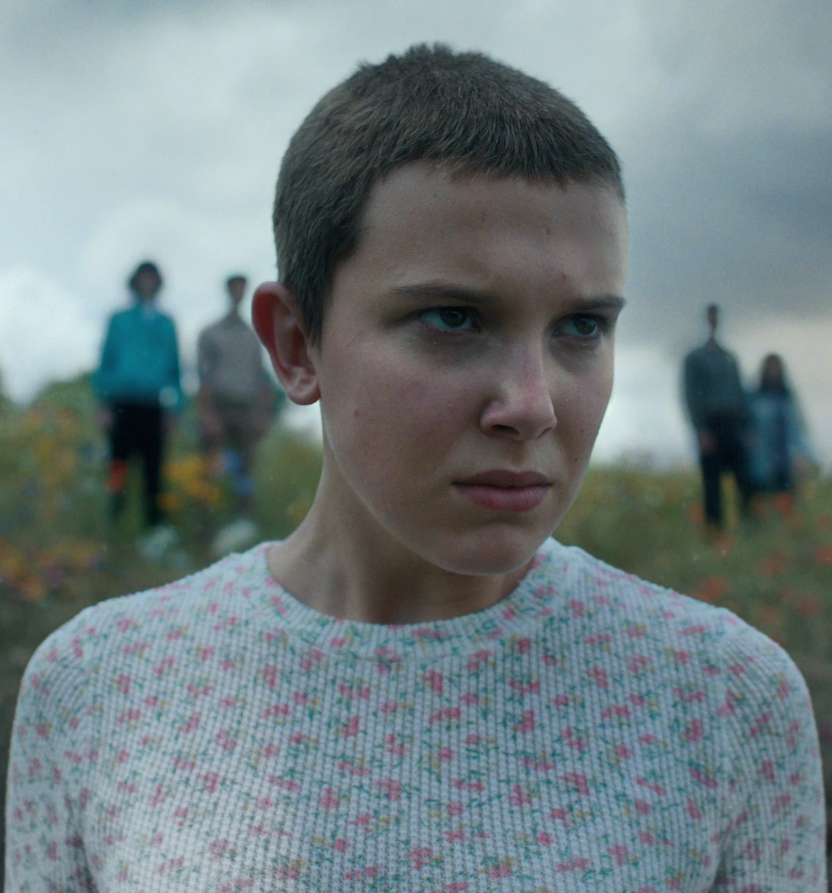
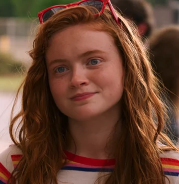

| Tier | Character | Role | Notable Traits | Memorable Moment | Image |
|---|---|---|---|---|---|
| S | Eleven | Superpowered Teen | Brave, Powerful, Caring | Stopping the Demogorgon |  |
| A | Dustin Henderson | Comic Relief Genius | Inventive, Loyal | Building Cerebro & friendship with Steve | |
| B | Max Mayfield | Skater & Fighter | Tough, Emotional | Running up that Hill scene |  |
| C | Lucas Sinclair | Sharpshooter & Strategist | Determined, Courageous | Basketball game vs. showdown with Vecna | |
| D | Jonathan Byers | Quiet Protector | Reserved, Smart | Saving Will from the Upside Down | |
Creating this tier list wasn’t easy—so many characters have had incredible arcs and moments. I put Eleven in S-tier because she’s literally the heart of the show, but also because of how much she's grown since season one. Dustin earned his spot because he's the brains and always brings humor and heart. Lucas is in A-tier, but honestly he was very close to S-tier (no bias… okay maybe a little). Characters like Jonathan and Argyle are cool in their own ways, but didn’t have as much screen time or impact in some seasons. This list is totally open for debate, which is why I added the contact form—I'd love to hear what other fans think!
As a huge fan of Stranger Things, this project was honestly a lot of fun to create. I’ve watched every season (more than once!) and always enjoy talking about the characters, so making a tier list felt natural. I tried to stay fair in my rankings even though Lucas is my absolute favorite—he’s grown so much throughout the series and totally deserves more love! It was interesting to step back and really think about each character’s development, impact, and moments across all the seasons. Building the table and form helped me appreciate how structure and accessibility can make a fan project more inclusive and user-friendly. Plus, styling it to fit the vibe of the show made the whole process even more enjoyable.